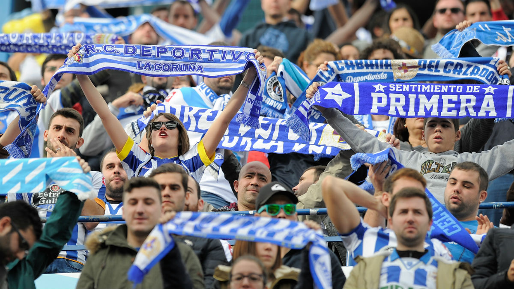

about

Como dijo en su día Lucas Pérez:
"Esto no va de categorías, ni de jugadores, se trata de unos colores, un amor, va de caer y levantarse".
«No está loco, es coruñés» decía la alcaldesa Inés Rey. El Deportivo es un equipo de carácter especial, como la ciudad. Somos de una ciudad de dimensiones pequeñas, pero con una presencia histórica que tiene una dimensión mucho mayor a su tamaño. Seguimos con una necesidad de sentirnos importantes. El Dépor es ahora una manera eficaz de plasmar ese sentimiento.
La otra causa es Arsenio. Todo eso que se hizo en cinco años,las llamas en la grada, el ‘cuánto sufrimos, Martín’, el penalti de Djukic y la Copa del Rey, es la épica. El dolor absoluto y la tristeza profunda. Y al año siguiente, antes de irse, un título. A una generación de entre 30 y 40 años, eso se le inyectó como un virus que se quedó para siempre.
Inspiró hondo Djukic, y al exhalar se escapó un penalti, un sueño y una ilusión, la de 1994. Pateó Andrade de broma a su amigo Deco, y una roja acabó con la esperanza deportivista en la Champions de 2004, la más barata de la historia. Remató Pablo Marí en el descuento, pero a su cabezazo se le escapó la Primera División para el Depor contra el Mallorca en 2019. Por último, 25.000 personas vieron en Riazor como Rubén de la Barrera, uno de los suyos, les ganaba la promoción de ascenso a Segunda División como entrenador del Albacete el verano pasado, después de dos años en el infierno de la Primera RFEF. Y aún así...
Podríamos seguir enumerando desgracias una tras otra, algunas más habituales en el fútbol de élite y otras no tanto. Podríamos suponer que la caída a los infiernos de un equipo de Primera División a Primera RFEF (antigua 2ªB) acabaría por cansar a una parroquia que tiene el fútbol como una escapatoria de paro, crisis, aumento de precios y otras cosas más importantes. Pero, ¿no es el fútbol la cosa más importante de las menos importantes? ¿No lo es el Depor?